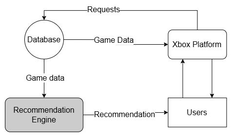

<!DOCTYPE html>
<html lang="en">
  <head>
    <meta charset="UTF-8" />
    <meta name="viewport" content="width=device-width, initial-scale=1.0" />
    <link rel="stylesheet" href="assets/css/styles.css" />
    <!-- =====BOX ICONS===== -->
    <link
      href="https://cdn.jsdelivr.net/npm/boxicons@2.0.5/css/boxicons.min.css"
      rel="stylesheet"
    />
    <title>Business Case Details - Sai's Portfolio</title>
  </head>
  <body>
    <!--===== HEADER =====-->
    <header class="l-header">
      <nav class="nav bd-grid">
        <div>
          <a href="index.html" class="nav__logo">Sai Satya B V</a>
        </div>
        <div class="nav__menu">
          <ul class="nav__list">
            <li class="nav__item">
              <a href="index.html#home" class="nav__link">Home</a>
            </li>
            <li class="nav__item">
              <a href="index.html#business-cases" class="nav__link">Back to Cases</a>
            </li>
          </ul>
        </div>
      </nav>
    </header>

    <main class="l-main">
      <!--===== CASE DETAILS =====-->
      <section class="case-details section" id="case-details">
        <h2 class="section-title">Xbox Recommendation & Personalization</h2>
        <div class="case-details__container bd-grid">
          <div class="case-details__img">
            
          </div>
          <div>
            <h3 class="case-details__subtitle">Overview</h3>
            <p class="case-details__text">
              Xbox aims to enhance user engagement by delivering personalized game recommendations. The challenge lies in understanding diverse user preferences across millions of players and suggesting relevant games in real time. Without effective personalization, users may miss out on new titles that align with their interests, leading to reduced playtime and lower satisfaction within Microsoft's gaming ecosystem.
            </p>
            <h3 class="case-details__subtitle">Proposed Solution</h3>
            <p class="case-details__text">
              To address this, Xbox can implement a recommendation system using algorithms such as KD-Tree, Distributions, Dyck Path, and Greedy Matching. Below is a detailed breakdown of each algorithm, including their advantages, disadvantages, time and space complexities, and C++ code implementations.
            </p>

            <h4 class="case-details__subsubtitle">KD-Tree</h4>
            <p class="case-details__text">
              <strong>Description:</strong> KD-Tree organizes user profiles in a multidimensional space (e.g., hours played per genre) for fast nearest-neighbor searches, identifying users with similar preferences.<br>
              <strong>Advantages:</strong> Efficient for nearest-neighbor searches, especially in low dimensions; reduces search time significantly compared to linear scans.<br>
              <strong>Disadvantages:</strong> Performance degrades in high dimensions due to the curse of dimensionality; requires balanced trees for optimal performance.<br>
              <strong>Time Complexity:</strong> Construction: O(n log n), Query: O(log n) on average, but can degrade to O(n) in high dimensions.<br>
              <strong>Space Complexity:</strong> O(n) for storing n user profiles.<br>
              <br>
              <h3><strong>Code Implementation (C++):</strong></h3><br>
              Below is a simplified KD-Tree implementation for 2D points (e.g., hours in action and RPG genres).
            </p>
            <pre class="case-details__code language-python">
#include <vector>
#include <algorithm>

struct KDNode {
    std::vector<double> point; // e.g., [hours_action, hours_rpg]
    KDNode* left;
    KDNode* right;
    KDNode(std::vector<double> p) : point(p), left(nullptr), right(nullptr) {}
};

class KDTree {
private:
    KDNode* root;
    KDNode* build(std::vector<std::vector<double>>& points, int depth, int start, int end) {
        if (start >= end) return nullptr;
        int mid = (start + end) / 2;
        int dim = depth % 2; // Alternate between dimensions
        std::sort(points.begin() + start, points.begin() + end,
                  [dim](const auto& a, const auto& b) { return a[dim] < b[dim]; });
        KDNode* node = new KDNode(points[mid]);
        node->left = build(points, depth + 1, start, mid);
        node->right = build(points, depth + 1, mid + 1, end);
        return node;
    }
public:
    KDTree(std::vector<std::vector<double>>& points) {
        root = build(points, 0, 0, points.size());
    }
};
            </pre>

            <h4 class="case-details__subsubtitle">Distributions</h4>
            <p class="case-details__text">
              <strong>Description:</strong> Distributions model user behavior statistically, such as the probability of enjoying specific genres based on historical playtime.<br>
              <strong>Advantages:</strong> Simple to compute and interpret; provides a probabilistic framework for predictions.<br>
              <strong>Disadvantages:</strong> Assumes past behavior predicts future preferences, which may not always hold; requires frequent updates to remain accurate.<br>
              <strong>Time Complexity:</strong> O(n) to compute a distribution from n data points (e.g., playtime per genre).<br>
              <strong>Space Complexity:</strong> O(k) where k is the number of categories (e.g., genres).<br>
              <h3><strong>Code Implementation (C++):</strong></h3><br>
              Below is a simple implementation to compute a genre preference distribution.
            </p>
            <pre class="case-details__code language-python">
#include <vector>
#include <map>
#include <string>

class GenreDistribution {
public:
    std::map<std::string, double> probs;
    GenreDistribution(const std::map<std::string, double>& playtime) {
        double total = 0;
        for (const auto& [genre, hours] : playtime) {
            total += hours;
        }
        for (const auto& [genre, hours] : playtime) {
            probs[genre] = hours / total;
        }
    }
    double getProbability(const std::string& genre) {
        return probs.count(genre) ? probs[genre] : 0.0;
    }
};

// Usage example:
int main() {
    std::map<std::string, double> playtime = {{"Action", 60}, {"RPG", 30}, {"Puzzle", 10}};
    GenreDistribution dist(playtime);
    // Probability of enjoying Action: 0.6
    return 0;
}
            </pre>

            <h4 class="case-details__subsubtitle">Dyck Path</h4>
            <p class="case-details__text">
              <strong>Description:</strong> Dyck Path analyzes engagement patterns over time as a balanced sequence of play (+1) and idle (-1) days, ensuring recommendations match the user's activity level.<br>
              <strong>Advantages:</strong> Simple way to model engagement patterns; helps identify consistent vs. casual users.<br>
              <strong>Disadvantages:</strong> Oversimplifies engagement by using binary states; ignores nuances like session length.<br>
              <strong>Time Complexity:</strong> O(n) to compute a Dyck Path over n days.<br>
              <strong>Space Complexity:</strong> O(n) to store the path.<br>
              <h3><strong>Code Implementation (C++):</strong></h3><br>
              Below is an implementation to check if a sequence forms a valid Dyck Path and compute its height.
            </p>
            <pre class="case-details__code language-python">
#include <vector>

class DyckPath {
public:
    std::vector<int> path; // +1 for play, -1 for idle
    int maxHeight;
    DyckPath(const std::vector<int>& sequence) : path(sequence), maxHeight(0) {
        int height = 0;
        for (int step : sequence) {
            height += step;
            if (height < 0) throw std::runtime_error("Invalid Dyck Path");
            maxHeight = std::max(maxHeight, height);
        }
        if (height != 0) throw std::runtime_error("Path does not return to 0");
    }
};

// Usage example:
int main() {
    std::vector<int> seq = {1, -1, 1, -1, 1, -1}; // Play, idle, play, idle, ...
    DyckPath dp(seq);
    // maxHeight indicates peak engagement
    return 0;
}
            </pre>

            <h4 class="case-details__subsubtitle">Greedy Matching</h4>
            <p class="case-details__text">
              <strong>Description:</strong> Greedy Matching pairs users with games by selecting the best match based on immediate compatibility scores, ensuring real-time suggestions.<br>
              <strong>Advantages:</strong> Fast and simple to implement; provides immediate recommendations.<br>
              <strong>Disadvantages:</strong> May miss globally optimal matches by focusing on local optima; might overfit to current preferences.<br>
              <strong>Time Complexity:</strong> O(n * m) where n is the number of users and m is the number of games.<br>
              <strong>Space Complexity:</strong> O(n + m) for storing user and game data.<br>
              <h3><strong>Code Implementation (C++):</strong></h3><br>
              Below is an implementation for Greedy Matching of users to games.
            </p>
            <pre class="case-details__code language-python">
#include <vector>
#include <string>

struct Game {
    std::string name;
    std::string genre;
};

struct User {
    std::string name;
    std::map<std::string, double> genrePrefs; // e.g., {"Action": 0.6, "RPG": 0.3}
};

class GreedyMatching {
public:
    std::vector<std::pair<User, Game>> match(const std::vector<User>& users, const std::vector<Game>& games) {
        std::vector<std::pair<User, Game>> matches;
        for (const auto& user : users) {
            double maxScore = -1;
            Game bestGame;
            for (const auto& game : games) {
                double score = user.genrePrefs.count(game.genre) ? user.genrePrefs.at(game.genre) : 0.0;
                if (score > maxScore) {
                    maxScore = score;
                    bestGame = game;
                }
            }
            matches.push_back({user, bestGame});
        }
        return matches;
    }
};

// Usage example:
int main() {
    std::vector<User> users = {{"Alice", {{"Action", 0.6}, {"RPG", 0.3}}}};
    std::vector<Game> games = {{"Cyberpunk", "Action"}, {"FIFA", "Sports"}};
    GreedyMatching gm;
    auto matches = gm.match(users, games);
    // Alice matched with Cyberpunk
    return 0;
}
            </pre>

            <h3 class="case-details__subtitle">Impact</h3>
            <p class="case-details__text">
              This solution can significantly improve user experience by delivering relevant game recommendations, increasing playtime and satisfaction. For instance, a user who frequently plays action games might receive a timely suggestion for a new title like Cyberpunk 2077, enhancing engagement. From a business perspective, better personalization can drive higher game sales and subscriptions to Xbox Game Pass, boosting revenue while strengthening user loyalty within the Xbox ecosystem.
            </p>
          </div>
        </div>
      </section>
    </main>

    <!--===== FOOTER =====-->
    <footer class="footer">
      <p class="footer__title">Sai Satya</p>
      <div class="footer__social">
        <a
          href="https://www.linkedin.com/in/sai-satya-49045426a/"
          target="_blank"
          class="footer__icon"
        >
          <i class="bx bxl-linkedin"></i>
        </a>
      </div>
      <p class="footer__copy">© Sai Satya. All rights reserved</p>
    </footer>

    <!--===== SCROLL REVEAL =====-->
    <script src="https://unpkg.com/scrollreveal"></script>
    <!--===== MAIN JS =====-->
    <script src="assets/js/main.js"></script>
  </body>
</html>